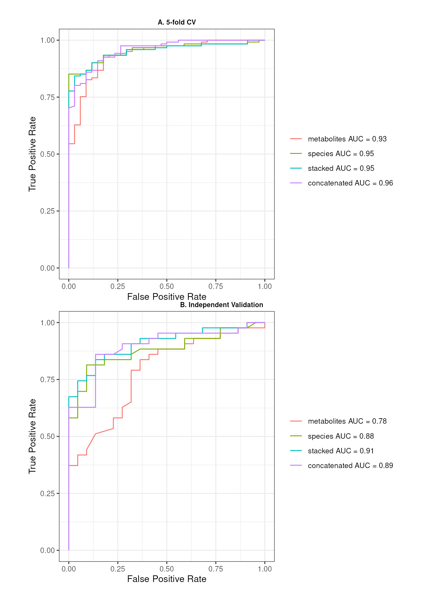
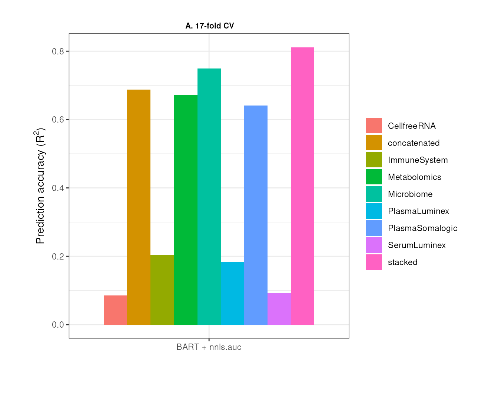
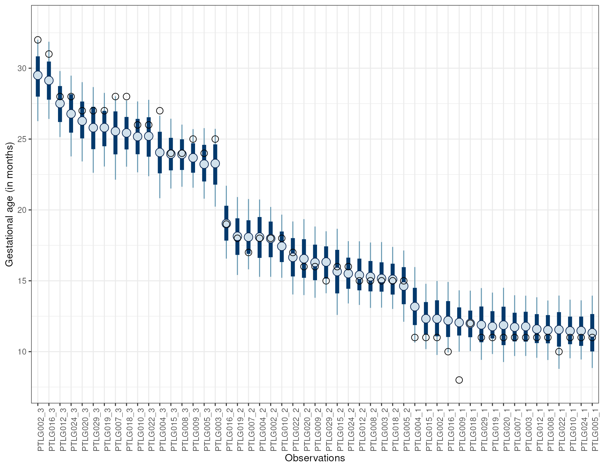
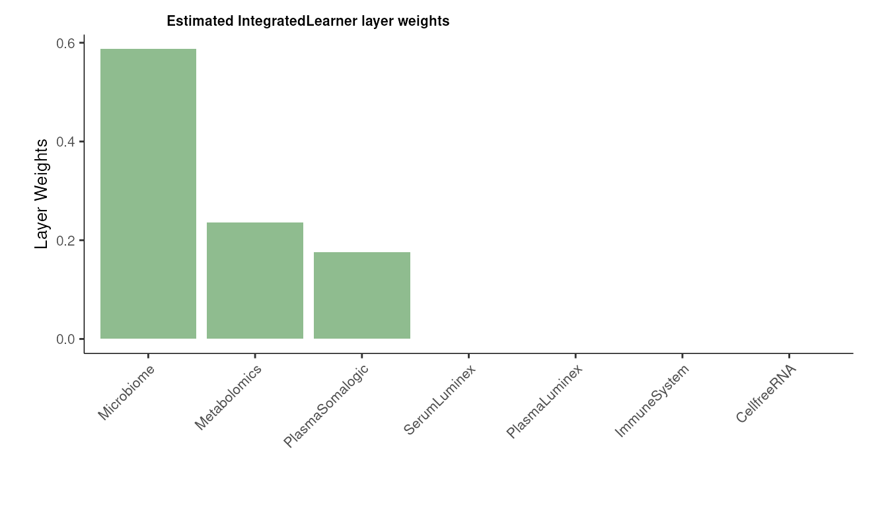
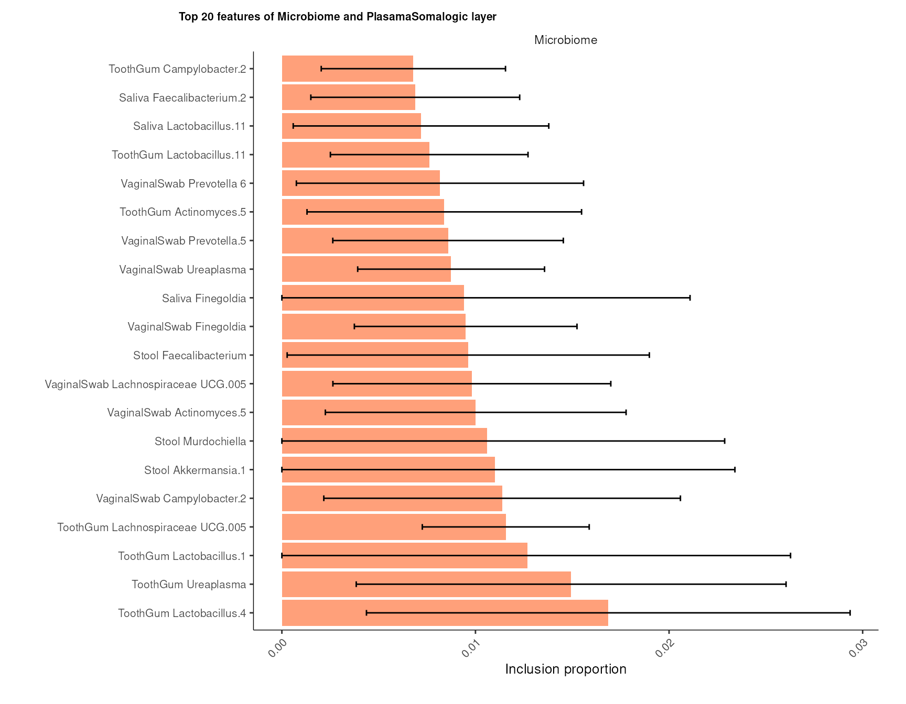

vignettes/IntegratedLearner.Rmd
IntegratedLearner.RmdThis vignette highlights some example workflows for performing
multi-omics prediction and classification using the
IntegratedLearner R package.
IntegratedLearner provides an integrated machine
learning framework to 1) consolidate predictions by borrowing
information across several longitudinal and cross-sectional omics data
layers, 2) decipher the mechanistic role of individual omics features
that can potentially lead to new sets of testable hypotheses, and 3)
quantify uncertainty of the integration process. Three types of
integration paradigms are supported: early, late, and intermediate. The
software includes multiple ML models based on the SuperLearner
R package as well as several data exploration capabilities and
visualization modules in a unified estimation framework.
Once installed, IntegratedLearner can
be simply loaded (along with the required packages) as follows:
IntegratedLearner requires three
tab-delimited input files: (i) concatenated multi-omics profiles
(feature_table), (ii) sample-specific metadata
(sample_metadata), and (iii) feature-specific metadata
(feature_metadata). The rows of the
feature_table should correspond to the concatenated
features (e.g., microbiome, gene expression, metabolites, etc.) and the
columns should correspond to samples.
The columns of the sample_metadata must correspond to
sample-specific covariates (e.g., disease status or the clinical outcome
of interest) with the rows corresponding to samples. Row names of
sample_metadata must match the column names of
feature_table. Furthermore, sample_metadata
should have a column named subjectID
describing per-subject unique identifiers. For longitudinal designs,
this variable is expected to have non-unique values. Additionally, a
column named Y must be present which is
the outcome of interest (can be binary or continuous).
feature_metadata is expected to be a data frame
containing feature-specific metadata with a column named
featureID describing per-feature unique
identifiers and featureType describing the
corresponding omics source layers (e.g., metagenomics, metabolomics,
etc.). Row names of feature_metadata must match that of
feature_table.
For the purpose of this vignette, it is assumed that these three input data have already been quality-controlled with necessary preprocessing steps. For the classification example, we will be using a cleaned version of the PRISM multi-omics dataset (Franzosa et al., 2019) which can be downloaded from here.
We first use the PRISM dataset (Franzosa et al., 2019) which is a gut microbiome multi-omics dataset consisting of quality-controlled features from 2 layers (i.e., microbiome taxonomic profiles and metabolites). In this study, stool samples were collected from a cross-sectional cohort of individuals enrolled in the Prospective Registry in IBD Study at MGH (PRISM) in order to characterize the gut metabolic profile and microbiome composition in Inflammatory Bowel Diseases (IBD).
This cohort included 155 subjects: 68 with Crohn’s disease (CD), 53 with ulcerative colitis (UC), jointly grouped as IBD, and 34 non-IBD controls. Each stool sample was subjected to metagenomic sequencing followed by profiling of microbial community taxonomic composition and functional potential. In addition, each sample was analyzed by four liquid chromatography tandem mass spectrometry (LC-MS) methods measuring polar metabolites, lipids, free fatty acids, and bile acids, respectively.
In addition to carrying out a holistic investigation of the microbiome–metabolome interface, one of the primary objectives of this study was to assess the power of the metabolomic and microbial layers in classifying IBD status.
Let us first examine the characteristics of the PRISM data by loading
the PRISM.RData
object which contains a list of three data frames:
feature_table, sample_metadata and
feature_metadata. Note that, the feature_table
contains negative values. This is because both species and metabolite
data have been residualized to remove the effect of potential
confounders.
# Load dataset
load(url("https://github.com/himelmallick/IntegratedLearner/blob/master/data/PRISM.RData?raw=true"))
# Extract individual components
feature_table<-pcl$feature_table
sample_metadata<-pcl$sample_metadata
feature_metadata<-pcl$feature_metadata
rm(pcl)
# Explore data dimensions
head(feature_table[1:5, 1:5])
#> G35127 G35128 G35152 G36347
#> Granulicella_unclassified -0.05253649 -0.05127158 -0.06133085 0.004887447
#> Actinomyces_graevenitzii 1.04668500 -1.32629194 -1.51654615 -3.247989324
#> Actinomyces_johnsonii -0.70327678 -0.41575776 -0.29326475 -0.314361595
#> Actinomyces_massiliensis -0.56808952 0.14722099 0.05660884 -1.077235688
#> Actinomyces_naeslundii -0.49546119 -0.15921604 -0.03146485 -0.354377267
#> G36348
#> Granulicella_unclassified -0.006164066
#> Actinomyces_graevenitzii -0.717183019
#> Actinomyces_johnsonii -0.340485318
#> Actinomyces_massiliensis -0.159240362
#> Actinomyces_naeslundii -0.139758576
head(sample_metadata[1:5, ])
#> Diagnosis Y subjectID
#> G35127 CD 1 G35127
#> G35128 CD 1 G35128
#> G35152 CD 1 G35152
#> G36347 CD 1 G36347
#> G36348 CD 1 G36348
head(feature_metadata[1:5, ])
#> featureID featureType
#> Granulicella_unclassified Granulicella_unclassified species
#> Actinomyces_graevenitzii Actinomyces_graevenitzii species
#> Actinomyces_johnsonii Actinomyces_johnsonii species
#> Actinomyces_massiliensis Actinomyces_massiliensis species
#> Actinomyces_naeslundii Actinomyces_naeslundii species
# How many layers and how many features per layer?
table(feature_metadata$featureType)
#>
#> metabolites species
#> 8831 340
# Distribution of outcome (1: IBD, 0: nonIBD)
table(sample_metadata$Y)
#>
#> 0 1
#> 34 121
# Sanity check
all(rownames(feature_table)==rownames(feature_metadata)) # TRUE
#> [1] TRUE
all(colnames(feature_table)==rownames(sample_metadata)) # TRUE
#> [1] TRUE
# Load independent validation dataset
load(url("https://github.com/himelmallick/IntegratedLearner/blob/master/data/NLIBD.RData?raw=true"))
feature_table_valid<-pcl$feature_table
sample_metadata_valid<-pcl$sample_metadata
rm(pcl)
# Sanity check to make sure test set has sample structure as training
all(rownames(feature_table)==rownames(feature_table_valid)) # TRUE
#> [1] TRUE
all(colnames(feature_table_valid)==rownames(sample_metadata_valid)) # TRUE
#> [1] TRUEIntegratedLearner late fusion algorithm proceeds by 1)
fitting a machine learning algorithm per-layer to predict outcome
(base_learner) and 2) combining the layer-wise
cross-validated predictions using a meta model
(meta_learner) to generate final predictions based on all
available data points. As a default choice, we recommend
SL.nnls.auc as the meta model algorithm. It fits a
non-negative least squares (in case of continuous outcome) and rank loss
minimization (in case of binary outcome) on layer-wise cross-validated
predictions to generate the final predictions and quantify per-layer
contribution in the final predictions. As an example, we would like to
build a random forest classifier based on these data to classify IBD
patients. By default, IntegratedLearner uses a 5-fold CV to
train the model (for the full dataset, it takes about ~5-6 minutes using
a single core of a system with an Intel Core i5 processor (1.7 GHz) and
16 GB of RAM - adjust your expectations accordingly!).
fit<-IntegratedLearner(feature_table = feature_table,
sample_metadata = sample_metadata,
feature_metadata = feature_metadata,
feature_table_valid = feature_table_valid,
sample_metadata_valid = sample_metadata_valid,
folds = 5,
base_learner = 'SL.randomForest',
meta_learner = 'SL.nnls.auc',
verbose = TRUE,
family=binomial())
#> Running base model for layer 1 ...
#> Number of covariates in All is: 8831
#> CV SL.randomForest_All
#> Number of covariates in All is: 8831
#> CV SL.randomForest_All
#> Number of covariates in All is: 8831
#> CV SL.randomForest_All
#> Number of covariates in All is: 8831
#> CV SL.randomForest_All
#> Number of covariates in All is: 8831
#> CV SL.randomForest_All
#> Non-Negative least squares convergence: TRUE
#> full SL.randomForest_All
#> Running base model for layer 2 ...
#> Number of covariates in All is: 340
#> CV SL.randomForest_All
#> Number of covariates in All is: 340
#> CV SL.randomForest_All
#> Number of covariates in All is: 340
#> CV SL.randomForest_All
#> Number of covariates in All is: 340
#> CV SL.randomForest_All
#> Number of covariates in All is: 340
#> CV SL.randomForest_All
#> Non-Negative least squares convergence: TRUE
#> full SL.randomForest_All
#> Running stacked model...
#> Number of covariates in All is: 2
#> CV SL.nnls.auc_All
#> Number of covariates in All is: 2
#> CV SL.nnls.auc_All
#> Number of covariates in All is: 2
#> CV SL.nnls.auc_All
#> Number of covariates in All is: 2
#> CV SL.nnls.auc_All
#> Number of covariates in All is: 2
#> CV SL.nnls.auc_All
#> Non-Negative least squares convergence: TRUE
#> full SL.nnls.auc_All
#> Running concatenated model...
#> Number of covariates in All is: 9171
#> CV SL.randomForest_All
#> Number of covariates in All is: 9171
#> CV SL.randomForest_All
#> Number of covariates in All is: 9171
#> CV SL.randomForest_All
#> Number of covariates in All is: 9171
#> CV SL.randomForest_All
#> Number of covariates in All is: 9171
#> CV SL.randomForest_All
#> Non-Negative least squares convergence: TRUE
#> full SL.randomForest_All
#> Time for model fit : 3.762 minutes
#> ========================================
#> Model fit for individual layers: SL.randomForest
#> Model fit for stacked layer: SL.nnls.auc
#> Model fit for concatenated layer: SL.randomForest
#> ========================================
#> AUC metric for training data:
#> Individual layers:
#> metabolites species
#> 0.934 0.955
#> ======================
#> Stacked model:0.951
#> ======================
#> Concatenated model:0.957
#> ======================
#> ========================================
#> AUC metric for test data:
#> Individual layers:
#> metabolites species
#> 0.782 0.879
#> ======================
#> Stacked model:0.908
#> ======================
#> Concatenated model:0.895
#> ======================
#> ========================================
#> Weights for individual layers predictions in IntegratedLearner:
#> metabolites species
#> 0.18 0.82
#> ========================================IntegratedLearner offers easily accessible and
interpretable summary outputs including 1) computation time, 2)
per-layer AUC/
scores on training and/or test data (if feature_table_valid
and sample_metadata_valid are provided), 3) AUC/
metrics for stacked and concatenated model if
run_stacked=TRUE and run_concat=TRUE and 4)
estimated per-layer weights from meta learner in stacked model.
We can visualize the classification performance by constructing
layer-wise ROC curves for both train and test set using
plot.learner() function that takes
IntegratedLearner object as input:
plot.obj <- IntegratedLearner:::plot.learner(fit)
For this particular multi-omics dataset, species data is more predictive than metabolites in classifying IBD patients and the stacked model achieves superior accuracy to individual layers and concatenation model in independent validation, indicating that the stacked multi-omics classifier leads to a competitive or superior cross-validated and independent validation classification accuracy than its single-omics counterparts.
The second dataset is a longitudinal multi-omics data from pregnant women in a cohort study at Stanford University (Ghaemi et al., 2019) that aimed to prospectively examine environmental and biological factors associated with normal and pathological pregnancies. Women were eligible if they were at least 18 years of age and in their first trimester of a singleton pregnancy. Unlike the PRISM dataset, the outcome variable in this study (gestational age) is a continuous outcome, which was determined by best obstetrical estimate as recommended by the American College of Obstetricians and Gynecologists .
In 17 women, three samples were collected during pregnancy and a fourth one after delivery. The time points were chosen such that a peripheral blood sample (CyTOF analysis), a plasma sample (proteomic, cell-free transcriptomics, metabolomics analyses), a serum sample (luminex analyses) and a series of culture swabs (microbiome analysis) were simultaneously collected from each woman during the first (7–14 weeks), second (15–20 weeks) and third (24–32 weeks) trimester of pregnancy and 6-week postpartum.
In order to assess performance of various machine learning modules
available in IntegratedLearner, we calculate the
coefficient of determination
()
based on the observed and cross-validated out-of-sample predicted values
of the gestational age. As before, cross-validation folds are
synchronized between the individual base models from each dataset to
leave out the same set of data points at all levels of the analysis.
As before, let’s now examine the characteristics of the pregnancy
data by loading the pregnancy.RData
object which again contains a list of three data frames:
feature_table, sample_metadata and
feature_metadata. Unlike the PRISM study, this dataset
contains repeated measures during pregnancy that allowed assessing
important biological adaptations occurring continuously from the early
phases of fetal development (first trimester) to the late phases of
gestation (third trimester). Considering both the small sample size and
the repeated measures aspects of this study, we employ a
one-subject-leave-out cross-validation to build prediction models,
following the original study.
# Load dataset
load(url("https://github.com/himelmallick/IntegratedLearner/blob/master/data/pregnancy.RData?raw=true"))
# Extract individual components
feature_table<-pcl$feature_table
sample_metadata<-pcl$sample_metadata
feature_metadata<-pcl$feature_metadata
# Explore data dimensions
head(feature_table[1:5, 1:5])
#> PTLG002_1 PTLG003_1 PTLG004_1 PTLG005_1 PTLG007_1
#> CEP135 28.21785 54.56723 53.776824 15.26909 11.04831
#> MIIP 10.10756 17.11006 4.336841 0.00000 19.88695
#> GNL3 45.25968 58.26670 56.378929 70.23780 64.08018
#> CEP70 79.09550 67.97782 93.675759 128.26033 66.28985
#> TIMP1 172.23675 121.62018 183.014677 247.35921 304.93329
head(sample_metadata[1:5, ])
#> Y subjectID
#> PTLG002_1 11 PTLG002
#> PTLG003_1 11 PTLG003
#> PTLG004_1 11 PTLG004
#> PTLG005_1 11 PTLG005
#> PTLG007_1 11 PTLG007
head(feature_metadata[1:5, ])
#> featureID featureType
#> CEP135 CEP135 CellfreeRNA
#> MIIP MIIP CellfreeRNA
#> GNL3 GNL3 CellfreeRNA
#> CEP70 CEP70 CellfreeRNA
#> TIMP1 TIMP1 CellfreeRNA
# How many layers and how many features per layer?
table(feature_metadata$featureType)
#>
#> CellfreeRNA ImmuneSystem Metabolomics Microbiome PlasmaLuminex
#> 9084 264 253 259 31
#> PlasmaSomalogic SerumLuminex
#> 650 31
# Number of subjects
length(unique(sample_metadata$subjectID))
#> [1] 17
# Sanity check
all(rownames(feature_table)==rownames(feature_metadata)) # TRUE
#> [1] TRUE
all(colnames(feature_table)==rownames(sample_metadata)) # TRUE
#> [1] TRUE
# Subset to a few rows to save computing time
# top_n<-50
# subsetIDs<-c(1:top_n, (nrow(feature_table)-top_n+1):nrow(feature_table))
# feature_table<-feature_table[subsetIDs,]
# feature_metadata<-feature_metadata[subsetIDs,]The default base model recommendation for
IntegratedLearner is Bayesian additive regression trees or
BART (base_learner='SL.BART'). Using BART as base-model
yields uncertainty estimates (i.e. credible intervals) of the prediction
and model parameters in addition to reporting a small set of
interpretable features for follow-up experiments (i.e. feature
importance scores).
fit<-IntegratedLearner(feature_table = feature_table,
sample_metadata = sample_metadata,
feature_metadata = feature_metadata,
folds = 17,
base_learner = 'SL.BART',
meta_learner = 'SL.nnls.auc')
#> Running base model for layer 1 ...
#> serializing in order to be saved for future R sessions...done
#> serializing in order to be saved for future R sessions...done
#> serializing in order to be saved for future R sessions...done
#> serializing in order to be saved for future R sessions...done
#> serializing in order to be saved for future R sessions...done
#> serializing in order to be saved for future R sessions...done
#> serializing in order to be saved for future R sessions...done
#> serializing in order to be saved for future R sessions...done
#> serializing in order to be saved for future R sessions...done
#> serializing in order to be saved for future R sessions...done
#> serializing in order to be saved for future R sessions...done
#> serializing in order to be saved for future R sessions...done
#> serializing in order to be saved for future R sessions...done
#> serializing in order to be saved for future R sessions...done
#> serializing in order to be saved for future R sessions...done
#> serializing in order to be saved for future R sessions...done
#> serializing in order to be saved for future R sessions...done
#> serializing in order to be saved for future R sessions...done
#> Running base model for layer 2 ...
#> serializing in order to be saved for future R sessions...done
#> serializing in order to be saved for future R sessions...done
#> serializing in order to be saved for future R sessions...done
#> serializing in order to be saved for future R sessions...done
#> serializing in order to be saved for future R sessions...done
#> serializing in order to be saved for future R sessions...done
#> serializing in order to be saved for future R sessions...done
#> serializing in order to be saved for future R sessions...done
#> serializing in order to be saved for future R sessions...done
#> serializing in order to be saved for future R sessions...done
#> serializing in order to be saved for future R sessions...done
#> serializing in order to be saved for future R sessions...done
#> serializing in order to be saved for future R sessions...done
#> serializing in order to be saved for future R sessions...done
#> serializing in order to be saved for future R sessions...done
#> serializing in order to be saved for future R sessions...done
#> serializing in order to be saved for future R sessions...done
#> serializing in order to be saved for future R sessions...done
#> Running base model for layer 3 ...
#> serializing in order to be saved for future R sessions...done
#> serializing in order to be saved for future R sessions...done
#> serializing in order to be saved for future R sessions...done
#> serializing in order to be saved for future R sessions...done
#> serializing in order to be saved for future R sessions...done
#> serializing in order to be saved for future R sessions...done
#> serializing in order to be saved for future R sessions...done
#> serializing in order to be saved for future R sessions...done
#> serializing in order to be saved for future R sessions...done
#> serializing in order to be saved for future R sessions...done
#> serializing in order to be saved for future R sessions...done
#> serializing in order to be saved for future R sessions...done
#> serializing in order to be saved for future R sessions...done
#> serializing in order to be saved for future R sessions...done
#> serializing in order to be saved for future R sessions...done
#> serializing in order to be saved for future R sessions...done
#> serializing in order to be saved for future R sessions...done
#> serializing in order to be saved for future R sessions...done
#> Running base model for layer 4 ...
#> serializing in order to be saved for future R sessions...done
#> serializing in order to be saved for future R sessions...done
#> serializing in order to be saved for future R sessions...done
#> serializing in order to be saved for future R sessions...done
#> serializing in order to be saved for future R sessions...done
#> serializing in order to be saved for future R sessions...done
#> serializing in order to be saved for future R sessions...done
#> serializing in order to be saved for future R sessions...done
#> serializing in order to be saved for future R sessions...done
#> serializing in order to be saved for future R sessions...done
#> serializing in order to be saved for future R sessions...done
#> serializing in order to be saved for future R sessions...done
#> serializing in order to be saved for future R sessions...done
#> serializing in order to be saved for future R sessions...done
#> serializing in order to be saved for future R sessions...done
#> serializing in order to be saved for future R sessions...done
#> serializing in order to be saved for future R sessions...done
#> serializing in order to be saved for future R sessions...done
#> Running base model for layer 5 ...
#> serializing in order to be saved for future R sessions...done
#> serializing in order to be saved for future R sessions...done
#> serializing in order to be saved for future R sessions...done
#> serializing in order to be saved for future R sessions...done
#> serializing in order to be saved for future R sessions...done
#> serializing in order to be saved for future R sessions...done
#> serializing in order to be saved for future R sessions...done
#> serializing in order to be saved for future R sessions...done
#> serializing in order to be saved for future R sessions...done
#> serializing in order to be saved for future R sessions...done
#> serializing in order to be saved for future R sessions...done
#> serializing in order to be saved for future R sessions...done
#> serializing in order to be saved for future R sessions...done
#> serializing in order to be saved for future R sessions...done
#> serializing in order to be saved for future R sessions...done
#> serializing in order to be saved for future R sessions...done
#> serializing in order to be saved for future R sessions...done
#> serializing in order to be saved for future R sessions...done
#> Running base model for layer 6 ...
#> serializing in order to be saved for future R sessions...done
#> serializing in order to be saved for future R sessions...done
#> serializing in order to be saved for future R sessions...done
#> serializing in order to be saved for future R sessions...done
#> serializing in order to be saved for future R sessions...done
#> serializing in order to be saved for future R sessions...done
#> serializing in order to be saved for future R sessions...done
#> serializing in order to be saved for future R sessions...done
#> serializing in order to be saved for future R sessions...done
#> serializing in order to be saved for future R sessions...done
#> serializing in order to be saved for future R sessions...done
#> serializing in order to be saved for future R sessions...done
#> serializing in order to be saved for future R sessions...done
#> serializing in order to be saved for future R sessions...done
#> serializing in order to be saved for future R sessions...done
#> serializing in order to be saved for future R sessions...done
#> serializing in order to be saved for future R sessions...done
#> serializing in order to be saved for future R sessions...done
#> Running base model for layer 7 ...
#> serializing in order to be saved for future R sessions...done
#> serializing in order to be saved for future R sessions...done
#> serializing in order to be saved for future R sessions...done
#> serializing in order to be saved for future R sessions...done
#> serializing in order to be saved for future R sessions...done
#> serializing in order to be saved for future R sessions...done
#> serializing in order to be saved for future R sessions...done
#> serializing in order to be saved for future R sessions...done
#> serializing in order to be saved for future R sessions...done
#> serializing in order to be saved for future R sessions...done
#> serializing in order to be saved for future R sessions...done
#> serializing in order to be saved for future R sessions...done
#> serializing in order to be saved for future R sessions...done
#> serializing in order to be saved for future R sessions...done
#> serializing in order to be saved for future R sessions...done
#> serializing in order to be saved for future R sessions...done
#> serializing in order to be saved for future R sessions...done
#> serializing in order to be saved for future R sessions...done
#> Running stacked model...
#> Running concatenated model...
#> serializing in order to be saved for future R sessions...done
#> serializing in order to be saved for future R sessions...done
#> serializing in order to be saved for future R sessions...done
#> serializing in order to be saved for future R sessions...done
#> serializing in order to be saved for future R sessions...done
#> serializing in order to be saved for future R sessions...done
#> serializing in order to be saved for future R sessions...done
#> serializing in order to be saved for future R sessions...done
#> serializing in order to be saved for future R sessions...done
#> serializing in order to be saved for future R sessions...done
#> serializing in order to be saved for future R sessions...done
#> serializing in order to be saved for future R sessions...done
#> serializing in order to be saved for future R sessions...done
#> serializing in order to be saved for future R sessions...done
#> serializing in order to be saved for future R sessions...done
#> serializing in order to be saved for future R sessions...done
#> serializing in order to be saved for future R sessions...done
#> serializing in order to be saved for future R sessions...done
#> Time for model fit : 4.766 minutes
#> ========================================
#> Model fit for individual layers: SL.BART
#> Model fit for stacked layer: SL.nnls.auc
#> Model fit for concatenated layer: SL.BART
#> ========================================
#> R^2 for training data:
#> Individual layers:
#> CellfreeRNA ImmuneSystem Metabolomics Microbiome PlasmaLuminex
#> 0.08542212 0.20491045 0.67114346 0.74897747 0.18314107
#> PlasmaSomalogic SerumLuminex
#> 0.64129255 0.09200745
#> ======================
#> Stacked model:0.8114878
#> ======================
#> Concatenated model:0.687933
#> ======================
#> ========================================
#> Weights for individual layers predictions in IntegratedLearner:
#> CellfreeRNA ImmuneSystem Metabolomics Microbiome PlasmaLuminex
#> 0.000 0.000 0.236 0.587 0.000
#> PlasmaSomalogic SerumLuminex
#> 0.176 0.000
#> ========================================
plot.obj <- IntegratedLearner:::plot.learner(fit) As before, the multi-omics stacked prediction model leads to a better cross-validated accuracy than its single-omics counterparts and concatenation model.
When base_learner='SL.BART', in addition to point
predictions, we can also generate 1) credible intervals for all
observations, 2) estimated layer weights in the meta model and 3)
feature importance scores.
weights <- fit$weights
dataX <- fit$X_train_layers
dataY <- fit$Y_train
post.samples <- vector("list", length(weights))
names(post.samples) <- names(dataX)
for(i in seq_along(post.samples)){
post.samples[[i]] <- bart_machine_get_posterior(fit$model_fits$model_layers[[i]],dataX[[i]])$y_hat_posterior_samples
}
weighted.post.samples <-Reduce('+', Map('*', post.samples, weights))
rownames(weighted.post.samples) <- rownames(dataX[[1]])
names(dataY) <- rownames(dataX[[1]])We show below the 68% and 95% credible intervals obtained from stacked model for all 51 observations. The filled circle indicates the posterior median and empty circle indicates the true value of the observation.
ord_names <- names(sort(rowMeans(weighted.post.samples), decreasing = TRUE))
mcmc_intervals(t(weighted.post.samples), prob = 0.68, prob_outer = 0.95) +
scale_y_discrete(limits = ord_names) +
geom_point(aes(x = dataY[ord_names], y = ord_names), shape = 1, size = 3, color = "black") +
coord_flip() +
theme_bw() +
labs(
x = "Gestational age (in months)",
y = "Observations",
) +
theme(axis.text.x = element_text(angle = 90, hjust = 1))
#> Scale for y is already present.
#> Adding another scale for y, which will replace the existing scale.
omicsEye_theme <- function() {
# set default text format based on categorical and length
angle = 45
hjust = 1
size = 6
return (ggplot2::theme_bw() + ggplot2::theme(
axis.text.x = ggplot2::element_text(size = 8, vjust = 1, hjust = hjust, angle = angle),
axis.text.y = ggplot2::element_text(size = 8, hjust = 1),
axis.title = ggplot2::element_text(size = 10),
plot.title = ggplot2::element_text(size = 10),
plot.subtitle = ggplot2::element_text(size = 8),
legend.title = ggplot2::element_text(size = 6, face = 'bold'),
legend.text = ggplot2::element_text(size = 7),
axis.line = ggplot2::element_line(colour = 'black', size = .25),
ggplot2::element_line(colour = 'black', size = .25),
axis.line.x = ggplot2::element_line(colour = 'black', size = .25),
axis.line.y = ggplot2::element_line(colour = 'black', size = .25),
panel.border = ggplot2::element_blank(),
panel.grid.major = ggplot2::element_blank(),
panel.grid.minor = ggplot2::element_blank())
)
}
myColtmp<-c("cornflowerblue","darkcyan","orchid4",
"brown","goldenrod4","mistyrose4","darkgreen","purple")
VIMP_stack<- cbind.data.frame(fit$weights)
colnames(VIMP_stack)<-c('mean')
VIMP_stack$sd <- NA
VIMP_stack$type<-'stack'
safe_var_importance <- function(model, layer_label) {
tryCatch({
qq <- bartMachine::investigate_var_importance(model, plot = FALSE)
df <- cbind.data.frame(qq$avg_var_props, qq$sd_var_props)
colnames(df) <- c('mean', 'sd')
df$type <- layer_label
df
}, error = function(e) {
warning(sprintf("Skipping variable importance for %s: %s", layer_label, conditionMessage(e)))
# Returning an empty data frame keeps the downstream plotting code functional
data.frame(mean = numeric(), sd = numeric(), type = character())
})
}
###############
# Microbiome #
###############
VIMP_microbiome <- safe_var_importance(fit$model_fits$model_layers$Microbiome, 'Microbiome')
#> .....
###############
# Plasma Somalogic #
###############
VIMP_PlasmaSomalogic <- safe_var_importance(fit$model_fits$model_layers$PlasmaSomalogic, 'PlasmaSomalogic')
#> .
#> Warning in value[[3L]](cond): Skipping variable importance for PlasmaSomalogic:
#> java.lang.OutOfMemoryError: Java heap space
VIMP<-as.data.frame(rbind.data.frame(VIMP_stack,
head(VIMP_microbiome, 20),
head(VIMP_PlasmaSomalogic, 20)))
VIMP<-rownames_to_column(VIMP, 'ID')
p4<-VIMP %>%
filter(type == 'stack') %>%
arrange(desc(mean)) %>%
ggplot(aes(y = mean, x = reorder(ID,-mean))) +
geom_bar(stat = "identity", fill = 'darkseagreen') +
theme_bw() +
#coord_flip() +
omicsEye_theme() +
ylab('Layer Weights') +
xlab('')
#> Warning: The `size` argument of `element_line()` is deprecated as of ggplot2 3.4.0.
#> ℹ Please use the `linewidth` argument instead.
#> This warning is displayed once every 8 hours.
#> Call `lifecycle::last_lifecycle_warnings()` to see where this warning was
#> generated.
p5<-VIMP %>%
filter(type %in% c('Microbiome', 'PlasmaSomalogic')) %>%
arrange(mean) %>%
mutate(ID = str_replace_all(ID, fixed("_"), " ")) %>%
mutate(type = factor(type,
levels = c('Microbiome', 'PlasmaSomalogic'),
labels = c('Microbiome', 'PlasmaSomalogic'))) %>%
ggplot(aes(reorder(ID, -mean), mean, fill = type)) +
facet_wrap(.~ type, scale = 'free') +
geom_bar(stat = "identity", fill = "lightsalmon") +
geom_errorbar(aes(ymin=ifelse(mean-sd>0,mean-sd,0), ymax=mean+sd), width=.2, position=position_dodge(.9)) +
theme_bw() +
coord_flip() +
omicsEye_theme() +
theme (strip.background = element_blank()) +
ylab('Inclusion proportion') +
xlab('')We also illustrate the estimated IntegratedLearner layer weights. We observe that the layers with highest single-omics predictive accuracy: microbiome, metabolomics and PlasmaSomalogic are given the most weight in the stacked model. Furthermore, we highlight the feature importance scores of top 20 features of microbiome and PlasmaSomalogic layer which highlights several features that agree with known biology.
plot_grid(p4,
ncol = 1,
labels = c('Estimated IntegratedLearner layer weights'),
label_size = 8, vjust = 0.1)+
theme(plot.margin = unit(c(0.5,0.5,0.5,0.5), "cm"))
plot_grid(p5,
ncol = 1,
labels = c('Top 20 features of Microbiome and PlasamaSomalogic layer'),
label_size = 8, vjust = 0.1)+
theme(plot.margin = unit(c(0.5,0.5,0.5,0.5), "cm"))
sessionInfo()
#> R Under development (unstable) (2025-11-06 r88990)
#> Platform: x86_64-pc-linux-gnu
#> Running under: Ubuntu 24.04.3 LTS
#>
#> Matrix products: default
#> BLAS: /usr/lib/x86_64-linux-gnu/openblas-pthread/libblas.so.3
#> LAPACK: /usr/lib/x86_64-linux-gnu/openblas-pthread/libopenblasp-r0.3.26.so; LAPACK version 3.12.0
#>
#> locale:
#> [1] LC_CTYPE=en_US.UTF-8 LC_NUMERIC=C
#> [3] LC_TIME=en_US.UTF-8 LC_COLLATE=en_US.UTF-8
#> [5] LC_MONETARY=en_US.UTF-8 LC_MESSAGES=en_US.UTF-8
#> [7] LC_PAPER=en_US.UTF-8 LC_NAME=en_US.UTF-8
#> [9] LC_ADDRESS=en_US.UTF-8 LC_TELEPHONE=en_US.UTF-8
#> [11] LC_MEASUREMENT=en_US.UTF-8 LC_IDENTIFICATION=en_US.UTF-8
#>
#> time zone: UTC
#> tzcode source: system (glibc)
#>
#> attached base packages:
#> [1] splines stats graphics grDevices utils datasets methods
#> [8] base
#>
#> other attached packages:
#> [1] bartMachine_1.3.4.1 missForest_1.6.1 randomForest_4.7-1.2
#> [4] bartMachineJARs_1.2.1 rJava_1.0-11 bayesplot_1.14.0
#> [7] cowplot_1.2.0 caret_7.0-1 lattice_0.22-7
#> [10] SuperLearner_2.0-29 gam_1.22-6 foreach_1.5.2
#> [13] nnls_1.6 lubridate_1.9.4 forcats_1.0.1
#> [16] stringr_1.6.0 dplyr_1.1.4 purrr_1.2.0
#> [19] readr_2.1.5 tidyr_1.3.1 tibble_3.3.0
#> [22] ggplot2_4.0.0 tidyverse_2.0.0 IntegratedLearner_0.0.2
#>
#> loaded via a namespace (and not attached):
#> [1] Rdpack_2.6.4 pROC_1.19.0.1 rlang_1.1.6
#> [4] magrittr_2.0.4 prediction_0.3.18 compiler_4.6.0
#> [7] systemfonts_1.3.1 vctrs_0.6.5 reshape2_1.4.5
#> [10] quadprog_1.5-8 crayon_1.5.3 pkgconfig_2.0.3
#> [13] shape_1.4.6.1 fastmap_1.2.0 backports_1.5.0
#> [16] labeling_0.4.3 rmarkdown_2.30 tzdb_0.5.0
#> [19] prodlim_2025.04.28 nloptr_2.2.1 itertools_0.1-3
#> [22] ragg_1.5.0 glmnetUtils_1.1.9 xfun_0.54
#> [25] glmnet_4.1-10 cachem_1.1.0 jsonlite_2.0.0
#> [28] recipes_1.3.1 parallel_4.6.0 R6_2.6.1
#> [31] bslib_0.9.0 stringi_1.8.7 RColorBrewer_1.1-3
#> [34] ranger_0.17.0 parallelly_1.45.1 rpart_4.1.24
#> [37] jquerylib_0.1.4 Rcpp_1.1.0 iterators_1.0.14
#> [40] knitr_1.50 future.apply_1.20.0 Matrix_1.7-4
#> [43] nnet_7.3-20 timechange_0.3.0 tidyselect_1.2.1
#> [46] abind_1.4-8 yaml_2.3.10 timeDate_4051.111
#> [49] codetools_0.2-20 listenv_0.10.0 doRNG_1.8.6.2
#> [52] plyr_1.8.9 withr_3.0.2 S7_0.2.0
#> [55] posterior_1.6.1 ROCR_1.0-11 evaluate_1.0.5
#> [58] future_1.67.0 desc_1.4.3 survival_3.8-3
#> [61] pillar_1.11.1 tensorA_0.36.2.1 rngtools_1.5.2
#> [64] checkmate_2.3.3 stats4_4.6.0 insight_1.4.2
#> [67] distributional_0.5.0 generics_0.1.4 hms_1.1.4
#> [70] scales_1.4.0 globals_0.18.0 class_7.3-23
#> [73] glue_1.8.0 tools_4.6.0 data.table_1.17.8
#> [76] ModelMetrics_1.2.2.2 gower_1.0.2 fs_1.6.6
#> [79] grid_4.6.0 rbibutils_2.4 ipred_0.9-15
#> [82] nlme_3.1-168 performance_0.15.2 cli_3.6.5
#> [85] textshaping_1.0.4 lava_1.8.2 gtable_0.3.6
#> [88] sass_0.4.10 digest_0.6.38 htmlwidgets_1.6.4
#> [91] farver_2.1.2 htmltools_0.5.8.1 pkgdown_2.2.0
#> [94] lifecycle_1.0.4 hardhat_1.4.2 MASS_7.3-65Franzosa EA et al. (2019). Gut microbiome structure and metabolic activity in inflammatory bowel disease. Nature Microbiology 4(2):293–305.
Ghaemi MS et al. (2019). Multiomics modeling of the immunome, transcriptome, microbiome, proteome and metabolome adaptations during human pregnancy. Bioinformatics 35(1):95-103.
Mallick et al. (2024). An integrated Bayesian framework for multi-omics prediction and classification. Statistics in Medicine 43(5):983–1002.